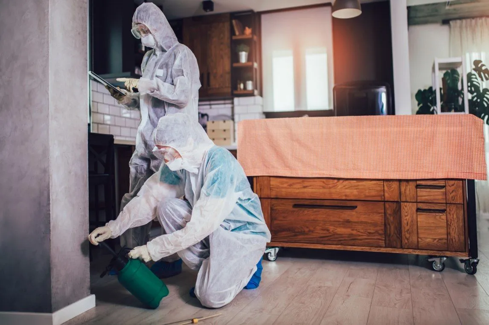

Possum removal, handled legally and humanely.
Brush-tail possums are native Australian wildlife — protected under ACT and NSW regulations. They can't be killed, and they can't be relocated more than 50 metres from the capture site. The legal, humane approach is to install a one-way exit door on the roof void entry point, then seal the secondary access points once the possum has left. TCB handles that process end-to-end so you stay on the right side of the regulations. If the cavity then needs insulation repair or decontamination, we'll point you to a specialist who handles that work.
Why possum removal is more restricted than other pests.
Native wildlife, not a pest.
Brush-tail possums are a protected native species. They cannot be killed. They cannot be relocated more than 50 metres from where they were trapped. Trapping is a licensed activity under ACT and NSW wildlife regulations.
Humane, in-place solution.
The standard approach is a one-way exit door on the roof void entry point. The possum leaves at night to forage, can't get back in, and finds its way back to a natural roost nearby. Seal the rest of the entry points only after the possum has moved out.
Same team.
Written report.
Fully licensed, fully insured, and locally based — our technicians live and work across the ACT, so they know what's normal for the season and what needs a second look.

Five steps from inspection to a quiet roof space.
No surprises, no unnecessary work. Every possum job follows the same five-step rhythm — inspection, exclusion, confirmation, sealing and written report — backed by our 100% satisfaction guarantee on every visit.
Inspection
Walk the perimeter, the roof void, the subfloor and any outbuildings. Identify the entry points, the current nest location and the species. We tell you what we saw before any work starts.
One-way exit door
Install a one-way exit door on the primary entry point — typically the fascia, the eaves or a broken tile gap. The possum leaves at night to forage and can't get back in.
Confirm exit
We monitor the property (or the customer does) to confirm the possum has left before the next step.
Seal secondary entry
Once confirmed empty, we seal the other entry points — broken tiles, gap fascias, broken vents — so a new possum can't move in.
Written report
Every visit closes with a typed report — what we found, what we did, what was sealed, what might need watching. We don't recommend unnecessary work.
The signs that point to a possum in the roof.
Possum activity is louder, slower and easier to spot than rat activity. If any of these four signs match what you're hearing or seeing at home, it's worth booking an inspection before the damage gets worse.
Heavy thumping at night
Possums are larger than rats — running and thumping across the ceiling is louder and more deliberate than rodent activity.
Urine smell in the roof
A strong musky ammonia-like smell in the roof void or the room below — particularly in older infestations.
Foliage scatter around gutters
Torn leaves, twigs and nesting material pulled into the roof space. External entry point often visible from the ground.
Droppings on paths below
Distinctive possum droppings on paths, decks and outdoor furniture close to the entry point.
The questions Canberra households ask first.
Can you just trap and relocate them?
Not legally. ACT and NSW regulations require that possums be released within 50 metres of the capture site — relocation further than this is illegal. The standard approach is the one-way door method described above.
How long does the process take?
Typically 5–7 nights from installation of the one-way door to confirmation that the possum has left. Sealing the secondary entry follows once the possum is confirmed out.
How much does possum removal cost in Canberra?
Each job is priced individually — the property layout, the number of entry points and the scope of work all affect the quote. We send a written quote before any work starts so you know exactly what's covered.
Will a new possum move in?
Once the entry points are sealed, no — at least not via the same access. A small gap somewhere else on the roof could allow a different possum. The written report flags any other vulnerable points we'd recommend closing.
Do you handle the clean-up?
No — our scope stops at humane exclusion and full sealing. If the roof cavity needs nest removal, soiled insulation replacement or decontamination, we'll flag it in the written report and refer you to a specialist who handles that.
Book possum removal today.
Tell us about your property and the noise you've been hearing. We'll come back within one business day with a written quote and the next available visit. Humane methods, ACT and NSW compliant, 100% satisfaction guarantee on every job.